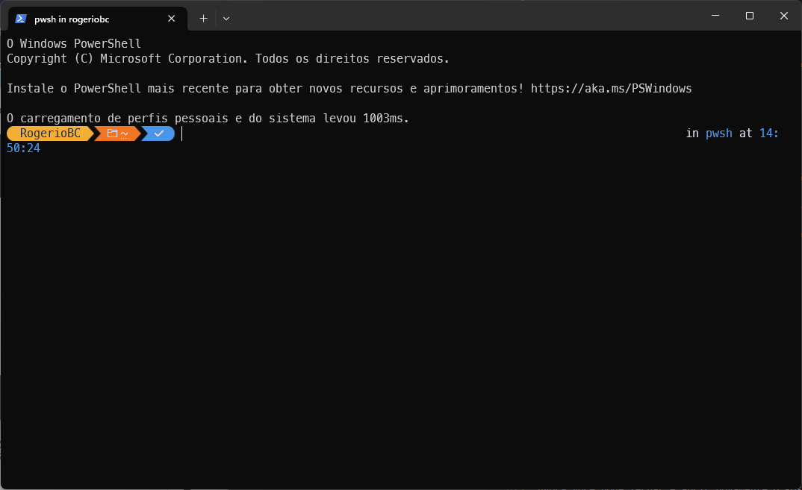
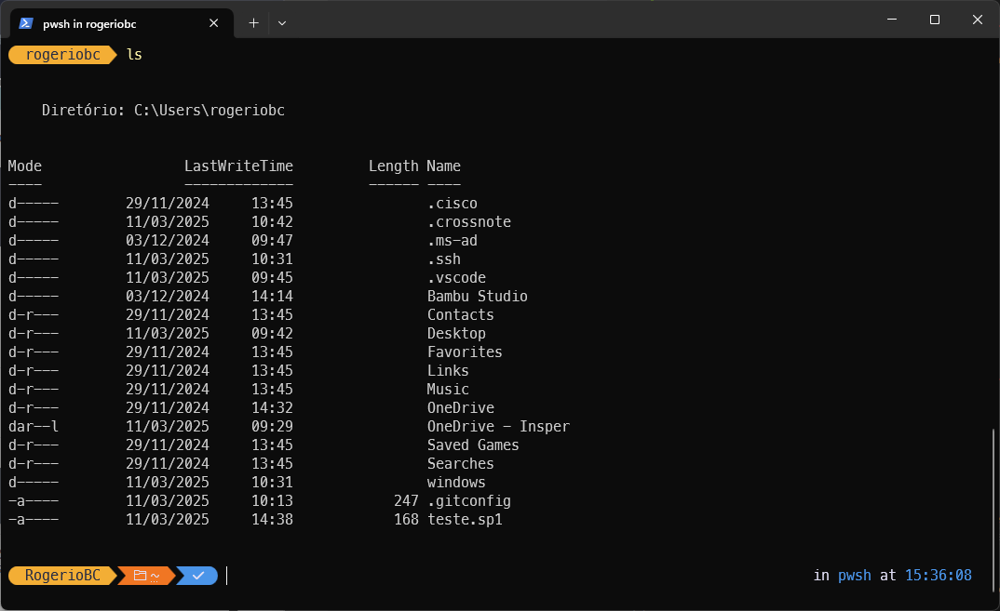
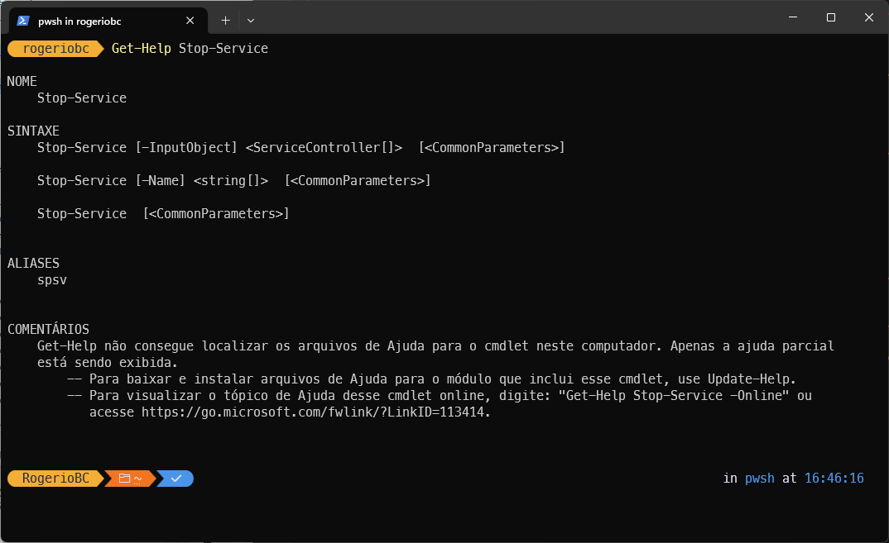

Fundamentos do PowerShell
Abrindo e personalizando o PowerShell - Posh
O Windows PowerShell (também chamado de PS) é muito mais do que um "prompt de comandos" como o antigo cmd herdado do DOS.
Este terminal tem muitos recusros e acessos ao sistema opercaional.
Para abror o PS, vá ao menu iniciar e pesquise por PowerShell ou use as teclas Ctrl+R para abrir a janela de execução e escreva PowerShell.
É comum utilizarmos respositórios GIT no dia a dia. Para facilitar a manipulação destes diretórios, vamos ter nosso primeiro contato com o PS instalando o Oh-My-Posh (similar ao oh-my-bash que usamos no Linux Ubuntu).
Para isso vamos usar o gerenciador de pacotes do Windows, o winget, para instalar o OhMyPowh:
Para usarmos o tema padrão do Oh-My-Posh, é preciso usar as Nerd Fonts. Para instalarmos, vamos o usar a extençao de fontes do Oh-My-Posh:
Escolha a fonte meslo.
Se quiser instalar apenas a fonte escolhida mas sem percorrer as demais, vocë pode instalar da seguinte forma:
Agora que temos a base do Oh-My-Posh, vamos fazer com que ele seja iniciado automaticamente.
- Se você já alterou o script de início do PS, ignore o primeiro comando e vá para o segundo.
Vamos então criar o script inicial do PS e na sequencia editar no próprio notepad.
Então acrescente a seguinte linha:
Agora você pode fechar e abrir novamente o PS e verá uma tela com este tema: 
{kind=link}
Agora que já temos alguma familiaridade com o PS, vamos ver alguns comandos básicos.
Navegando entre os diretórios
Quando você abre o PS ele está no diretório raiz do seu uruário. Você pode listar o conteúdo desta pasta de arquivos com o comando ls. Veja o print de tela: 
{kind=link}
Vamos entender o que está nesta tela.
- Coluna Mode trás informações sobre o item:
- d: Diretório
- l: Link (pode ser um link simbólico, atalho, etc.)
- a: Arquivo marcado para backup (indicando que foi modificado desde o último backup)
- r: Somente leitura
- h: Arquivo ou diretório oculto
- s: Arquivo ou diretório do sistema (protegido pelo sistema operacional)
- Coluna LastWriteTime trás informações sobre a data e hora da última modificação do item
- Coluna Length trás o tamanho do item, se for um arquivo
- Coluna Name trás o nome do item.
Para entrar em um diretório ou "subir" em um diretório você usa o comando cd seguido do diretório que deseja entrar. Não se esqueça de teclar Enter depois de cada comando!
Para exemplificar, vou entrar no diretório windows (diretório do repositório desta AC)
{kind=link}
para voltar um diretório atrás, use cd ...
{kind=link}
Pronto, agora já sabemos navegar nas pastas, editar arquivos texto usando o notepad (você pode trocar por code se estiver usando o vscode) e a listar os arquivos e pastas existentes em uma pasta que você está.
Também já utilizamos o winget para instalar os pacotes do oh-my-posh.
Vamos partir então para sintaxes do PS e uma utilização mais interessante dele.
Sintaxe Básica
A sintaxe do PowerShell segue um padrão "Verbo-Substantivo". Por exemplo:
Get-Process: Obtém informações sobre processos em execução
Stop-Service: Para um serviço do Windows
New-Item: Cria um novo item (arquivo, pasta, etc.)
Este padrão torna os comandos mais intuitivos e fáceis de lembrar.
Comandos Essenciais
Get-Help: Fornece informações detalhadas sobre comandos.
Get-Command: Lista todos os comandos disponíveis
Get-Member: Mostra propriedades e métodos de objetos
Como exemplo, vamos usar o cmdlet abaixo e saber como funciona o Stop-Service:
Após executar este comando, você verá algo parecido com um manual do comando que passou como parâmetro. 
{kind=link}
Estes comandos são fundamentais para aprender e explorar o PowerShell.